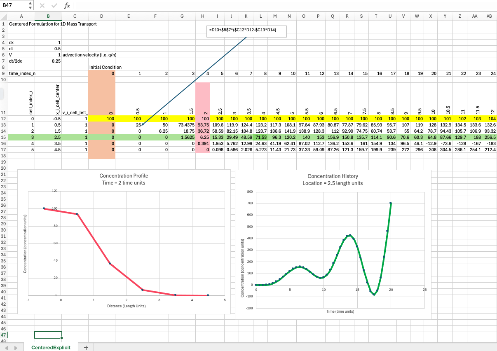

Upwind Formulation Finite-Difference#
Introduction to Finite-Difference Methods for Transport Modeling
Transport modeling is a key component in simulating the movement of contaminants, heat, or fluids in natural systems. At the heart of many transport processes are partial differential equations (PDEs), which describe the evolution of a quantity over space and time. One of the most common methods for solving these equations numerically is the finite-difference method (FDM). This approach discretizes space and time into a grid and approximates the derivatives of the governing equations. Finite-Difference Method
In the finite-difference method, spatial and temporal domains are discretized into small steps. The derivatives in the governing transport PDE are approximated using the differences between neighboring grid points.
For example, consider the 1D advection equation (a typical transport equation): $\(\frac{\partial C}{\partial t} = - V \frac{\partial C}{\partial x}\)$
where \(C(x,t)\) is the transported quantity (e.g., concentration), \(V\) is the advection velocity, and \(t\) and \(x\) are time and space, respectively.
To solve approximate the solution using finite-difference, we could approximate the derivatives as:
However, the simple central difference approximation for the spatial derivative may lead to non-physical oscillations or instability, particularly when solving hyperbolic dominanted transport equations like the advection equation.
Upwinding in Hyperbolic-Dominant PDEs#
In transport modeling, hyperbolic PDEs (like the advection equation) describe wave propagation and are characterized by the dominance of the advection term. When solving such equations numerically, the choice of difference scheme is critical for stability and accuracy.
Upwind differencing is a technique specifically designed to handle hyperbolic PDEs. The idea is to use information from the direction of the flow (upstream) to approximate the spatial derivative. This prevents the introduction of non-physical oscillations by ensuring that the finite-difference scheme respects the direction of the characteristic waves (i.e., the direction in which information propagates). Upwind Scheme
For a simple 1D advection equation, if the flow velocity \(V>0\) (information travels to the right), we use the backward difference to approximate the spatial derivative: $\(\frac{\partial C}{\partial x} \approx \frac{C_{i}^{n} - C_{i-1}^n}{\Delta x}~\text{(spatial derivative, backward difference)}\)$
If \(V<0\) (information travels to the left), we use the forward difference:
This technique, called upwinding, introduces numerical dissipation that stabilizes the solution and prevents oscillations, but it does so at the cost of some accuracy (it can be less accurate for smooth solutions compared to central differencing).
Why Upwinding is Important#
Upwinding is essential in transport modeling because most real-world problems involve advection-dominated transport, where sharp fronts or discontinuities are common (e.g., contaminant plumes or shock waves). Without upwinding, traditional finite-difference methods can result in:
Non-physical oscillations: especially when trying to capture sharp gradients.
Instability: numerical solutions can blow up if the scheme is not carefully designed for hyperbolic systems.
Artificial diffusion: even stable solutions will have apparent added diffusion that is absent from the physical system.
By incorporating upwinding, we align the numerical method with the physics of the problem, ensuring that information propagates in the correct direction, thereby stabilizing the simulation.
A simple example follows to illustrate the effect of upwinding and no upwinding.
Upwind formulation#
A simple upwind formulation for 1D system is
The parts with the absolute value are a sneaky way to handle the upwinding automatically.
As long as \(V_i <= \frac{\Delta t}{\Delta x}\) this difference scheme is stable, it is also reasonably accurate if \(V_i \approx \frac{\Delta t}{\Delta x}\)
Below is a simple spreadsheet implementation of the explicit scheme above.

In MODFLOW6 transport model, a choice of upwind (called upstream in the toolkit) tries to match internal time steps to maintain numerical stability. As you will see in class when we run a spreadsheet example. Its impossible for perfect accuracy and stability, but it is possible to stay close. We will see examples of numerical diffusion as we depart from the accuracy requirement.
Centered formulation#
This scheme will exhibit substantial numerical diffusion in part because it is a non-upwind formulation.
Below is a simple spreadsheet implementation of the explicit, centered in space scheme above.

The spreadsheet above nicely exhibits numerical diffusion, apparent in the profile plot as well as oscillation in the time history. Professional tools address this phenomenon by a variety of approaches, upwinding and flux limiters being common reliable methods, a method of characteristics is another way to deal with the issue.
Numerical Diffusion When solving advection-dominated partial differential equations (PDEs) using numerical methods, one common issue is numerical diffusion (also called numerical dissipation). This artifact of the numerical scheme can significantly affect the accuracy of the solution, particularly when sharp gradients or fronts are present, as in contaminant transport or shock waves.
Numerical diffusion is especially problematic in non-upwind formulations, such as those using central differencing for spatial derivatives. To understand why this happens, let’s review what numerical diffusion is and why it arises in these schemes. What is Numerical Diffusion?
Numerical diffusion refers to the artificial smoothing or blurring of a solution in a numerical model, which leads to a loss of sharpness in the advective transport of quantities like contaminants, pollutants, or heat. This effect is not physical but arises from the discretization of the advection equation.
The equation should transport \(C(x,t)\) without changing its waveform (if no other processes, such as diffusion or dispersion, are acting). However, many numerical schemes, particularly non-upwind methods, introduce spurious diffusion into the solution.
Central Differencing and Numerical Diffusion
One popular method for approximating the spatial derivative is central differencing which is used in the scheme just preceding. While central differencing has second-order accuracy, meaning it can provide higher accuracy for smooth solutions, it is unstable when applied to advection-dominated problems without additional stabilization mechanisms. Specifically, central differencing often leads to oscillations and numerical diffusion in the solution when dealing with sharp fronts or discontinuities.
Why Numerical Diffusion Occurs
Numerical diffusion arises from the fact that non-upwind methods, like central differencing, do not adequately account for the direction of the flow in advection-dominated problems. In these cases, the finite-difference scheme inadvertently mimics a diffusive process. This can be understood as follows:
Information propagation: In hyperbolic PDEs like the advection equation, information propagates in a specific direction (determined by the sign of cc). Non-upwind methods like central differencing treat the spatial derivative symmetrically, which leads to a lack of proper alignment with the flow direction.
Smoothing effect: When central differencing is used in such cases, it smooths the solution because it averages information from both directions (upstream and downstream) of the grid point. This acts similarly to a diffusion process, where sharp gradients are smeared over time.
Impact of Numerical Diffusion
Numerical diffusion is particularly problematic for sharp fronts, such as contaminant plumes, where it can cause:
Excessive smoothing of the front: The sharp boundary of the plume becomes diffused over a larger area than physically expected.
Loss of mass conservation: In some cases, numerical diffusion can lead to non-conservative solutions, where the total amount of the transported quantity is not accurately preserved.
For example, if you are modeling the transport of a pollutant in groundwater using central differencing, the sharp concentration gradient between the polluted and unpolluted regions can be artificially blurred. This causes the plume to spread out more than it physically should.
Mitigating Numerical Diffusion
To reduce or eliminate numerical diffusion, upwinding schemes are commonly used. The upwind finite-difference method ensures that the spatial derivative is calculated using values from the upstream direction, thus preventing the unwanted smoothing that central differencing introduces. Although upwinding alone introduces some numerical dissipation, this dissipation is controlled and aligned with the flow direction, making it more suitable for advection-dominated problems.
References#
Koutitas,C.G. (1983) Elements of computational hydraulics Pentech Press ; New York : Distributed in the USA by Chapman and Hall Link is to internet book archive.